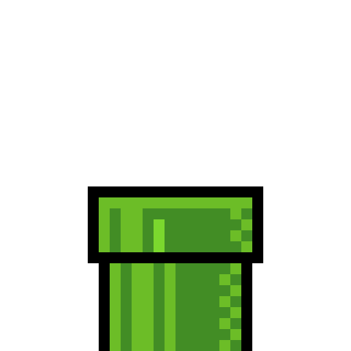
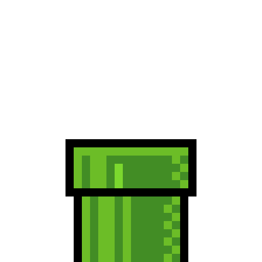

Personal Info
 



In Super Mario Bros. for the Nintendo Entertainment System, Mario saves Princess Toadstool (later known as Princess Peach) of the Mushroom Kingdom from King Koopa. To save Princess Toadstool, Mario conquers the eight worlds of the Mushroom Kingdom by going to the castle in each to defeat a minion of King Koopa. To reach each castle, Mario battles through three sub-worlds by defeating King Koopa's henchmen. If Mario successfully fights his way through the castle and defeats the minion, he frees a Mushroom Retainer. Inside the eighth castle, Mario has a final fight with King Koopa and frees Princess Toadstool. In Super Mario Bros. 2, the player can choose between Mario, Luigi, Toad, or Princess Peach. Each character possesses unique abilities (Luigi has the stronger jumping ability, Toad can dig the fastest, and Peach can float), with Mario being the most well-rounded. In Super Mario Bros. 3, Mario quests to save the rulers of seven kingdoms from Bowser and his children, the Koopalings, and Mario travels across eight worlds to restore order to the Mushroom World and to rescue Princess Peach.[] Mario is introduced to new power-ups that augment his abilities.
In Super Mario Land 2: 6 Golden Coins, whose events take place immediately after the original Super Mario Land, Mario's evil counterpart Wario has put an evil spell over Mario Land while Mario was away in Sarasaland, renaming the area Wario Land. The inhabitants are brainwashed into thinking that Wario is their master and Mario is their enemy. Wario's motive behind this sudden attack was to take control of Mario's castle in order to have one of his own. To stop Wario, Mario finds the 6 Golden Coins throughout Mario Land and regains access to his castle. In Super Mario World 2: Yoshi's Island, a stork carries Baby Mario and Baby Luigi across the sea, but the evil Magikoopa Kamek steals Baby Luigi, and Baby Mario falls onto an island called Yoshi's Island, home to Yoshis. After Mario meets the Yoshis, the group journeys through the game's six worlds to rescue Baby Luigi and the stork from Baby Bowser and Kamek.
Mario made his 3D debut in Super Mario 64 for the Nintendo 64. Princess Peach sends Mario a letter inviting him to join her at her castle for cake; however, when he arrives, Mario discovers that Bowser has invaded the castle and imprisoned the princess and her servants within it using the castle's 120 Power Stars. Many of the castle's paintings are portals to other worlds, in which Bowser's minions guard the stars. Mario explores the castle and other worlds to recover the stars. He gains access to more painting portals as he recovers more stars, and he traverses three obstacle courses that lead him to battle with Bowser. Defeating Bowser the first two times earns Mario keys that open new levels of the castle, while the final battle releases Peach, who rewards Mario by baking the cake that she promised him. In Super Mario Sunshine, Mario, Toadsworth, and Princess Peach take a vacation to Isle Delfino, a tropical island. A person resembling Mario, known as "Shadow Mario", vandalizes and pollutes the entire island using a magic paintbrush. The vandalism has caused the Shine Sprites to flee from the island's main city, Delfino Plaza, and blanket the island in darkness. Blamed for the mess, Mario is arrested by the island authorities and ordered to clean up Isle Delfino. Mario is equipped with FLUDD, a robotic hosing device invented by Professor E. Gadd, which he uses to clean up the pollution and collect the Shine Sprites. Meanwhile, Peach is kidnapped by Shadow Mario, who reveals himself to be Bowser Jr., one of Bowser's children, having stolen the paintbrush from Professor E. Gadd. Mario eventually confronts Bowser and Bowser Jr. and rescues the princess. With the island cleaned up, Mario and Peach begin their vacation.
Mario went to 2.5D in New Super Mario Bros. While Mario and Peach take a walk together through the Mushroom Kingdom, Bowser Jr. kidnaps Peach and flees. Mario gives chase, venturing through eight worlds. Mario eventually catches up, defeating both Bowser and Bowser Jr. and rescuing Peach. In Super Mario Galaxy, Mario is invited by Princess Peach to the centennial Star Festival in the Mushroom Kingdom. Upon arrival, Bowser invades the kingdom and rips Peach's castle from its foundations and lifts it into outer space. After failing to prevent the princess from being kidnapped, Mario meets star-like creatures called Lumas and their companion, Rosalina. Rosalina tells Mario that Bowser has stolen the Power Stars, the source of power for Rosalina's mobile observatory, and has taken Peach to the center of the universe. Mario then travels to various galaxies to reclaim the Power Stars to restore power to the observatory and reclaim Princess Peach. In New Super Mario Bros. Wii, another 2.5D game, Mario, Luigi, and two Toads are attending Princess Peach's birthday party when Bowser Jr. and the other seven Koopalings ambush the princess and kidnap her. Mario, Luigi, and the two Toads chase after them across eight worlds, defeating each Koopaling as they progress. The quartet eventually confronts Bowser, defeating him and saving the princess. In Super Mario Galaxy 2, Bowser, who has transformed himself into a giant using the Power Stars, attacks the Mushroom Kingdom and abducts Peach, taking her to the center of the universe. With the help of the Lumas, Mario pilots Starship Mario, a mobile planet in the shape of his head, in order to travel to various galaxies and gather the Power Stars, used to fuel the ship. After multiple battles against both Bowser and Bowser Jr., Mario eventually arrives at Bowser's lair at the center of the universe, where he defeats him and rescues the princess. In 2012, Mario returned in New Super Mario Bros. 2 where he collects several coins scattered across the Mushroom Kingdom in addition to saving Princess Peach from the evil clutches of Bowser and the Koopalings. Mario returns to defeat Bowser and his minions in New Super Mario Bros. U. Mario is one of the playable characters in Super Mario 3D World, where he has average running speed and jump height compared to other characters. Mario is the protagonist of the Nintendo Switch game Super Mario Odyssey, where the character Cappy replaces Mario's traditional hat, allowing Mario to throw it like a long-range weapon, and "capture" enemies to gain their abilities.